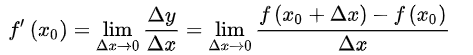
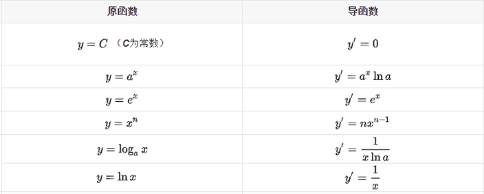
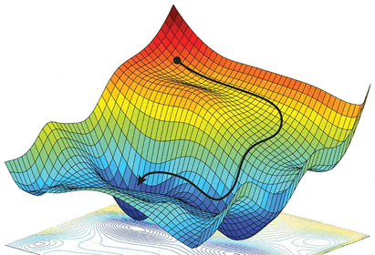

梯度下降求极值
在《线性回归：损失函数和假设函数》一节，从数学的角度解释了假设函数和损失函数，我们最终的目的要得到一个最佳的“拟合”直线，因此就需要将损失函数的偏差值减到最小，我们把寻找极小值的过程称为“优化方法”，常用的优化方法有很多，比如共轭梯度法、梯度下降法、牛顿法和拟牛顿法。你可能对于上述方法感到陌生，甚至于害怕，其实大可不必，它们只不过应用了一些数学公式而已。
本节我们重点学习梯度下降法（Gradient Descent），在认识该方法之前，我们先复习一下高中时的数学知识。
导数有其严格的数学定义，它巧妙的利用了极限的思想，也就是无限趋近于 0 的思想。设函数 y=f(x) 在点 x0 的某个邻域内有定义，当自变量 x 在 x0 处有增量 Δx，(x0+Δx）也在该邻域内时，相应地函数取得增量 Δy=f(x0+Δx)-f(x0)；如果 Δy 与 Δx 之比当 Δx→0 时极限存在，则称函数 y=f(x) 在点 x0 处可导，并称这个极限为函数 y=f(x) 在点 x0 处的导数记做 ：
那么什么样的函数具有导数呢？是不是所有的函数都有导数？当然不是，而且函数也不一定在其所有点上都有导数。如果某函数在某一点导数存在，则称其在这一点可导，否则称为不可导。可导的函数一定连续；不连续的函数一定不可导。
导数的发明者是伟大的科学家牛顿与布莱尼茨，它是微积分的一个重要的支柱。在机器学习中，我们只需会用前辈科学家们留下来的知识就行了，比如熟悉常见的导函数公式，以下列举了常用的导数公式：
有如下函数 z = x2 + 3xy + y2，分别求 z 对于 x 、y 的偏导数。如下所示：
梯度是微积分学的术语，它本质上是一个向量，表示函数在某一点处的方向导数上沿着特定的方向取得最大值，即函数在该点处沿着该方向变化最快，变化率最大。梯度下降法的计算过程就是沿梯度方向求解极小值，当然你也可以沿梯度上升的方向求解极大值。
那么如何能够更好的理解“梯度下降”呢？如果不考虑其他外在因素，其实你可以把它想象成“下山”的场景，如何从一个高山上以最快的时间走到山脚下呢？其实很简单，以你所在的当前位置为基准，寻找该位置最陡峭的地方，然后沿着此方向向下走，并且每走一段距离，都要寻找当前位置“最陡峭的地方”，反复采用上述方法，最终就能以最快的时间抵达山脚下。
在这个下山的过程中，“寻找所处位置最陡峭的地方，并沿此位置向下走”最为关键，如果把这个做法对应到函数中，就是找到“给定点的梯度”而梯度的方向就是函数值变化最快的方向。
从上述描述中，你可能感觉到平淡无奇，其实每一个词语都蕴含着数学知识，比如“以当前所在位置为基准，找到最陡峭的地方”从数学角度来讲就是找到所在点的“切线”方向，也就是对这点“求导”，然后循着切线轨迹点反复使用此方法，就可以到达极小值点。
在《线性回归：损失函数和假设函数》一节，我们讲解了线性回归的损失函数，而梯度下降作为一种优化方法，其目的是要使得损失值最小。因此“梯度下降”就需要控制损失函数的
“学习率”是一个由外部输入的参数，被称为“超参数”，可以形象地把它理解为下山时走的“步长”大小，想要 w 多调整一点，就把学习率调高一点。不过学习率也不是越高越好，过高的学习率可能导致调整幅度过大，导致无法求得真正的最小值。当损失函数取得极小值时，此时的参数值被称为“最优参数”。因此，在机器学习中最重要的一点就是寻找“最优参数”。
梯度下降是个大家族，它有很多成员，比如批量梯度下降（BGD）、随机梯度下降（SGD）、小批量梯度下降（MBGD），其中批量梯度下降是最常用的，相关内容后续会详细介绍。
本节我们重点学习梯度下降法（Gradient Descent），在认识该方法之前，我们先复习一下高中时的数学知识。
导数
导数也叫导函数，或者微商，它是微积分中的重要基础概念，从物理学角度来看，导数是研究物体某一时刻的瞬时速度，比如你开车从家 8:00 出发到公司上班，9:00 到到达公司，这一个小时内的平均车速是 80km/h，而途中8:15:30这一时刻的速度，就被称为瞬时速度，此刻的速度可能是 100km/h，也可能是 20km/h。而从几何意义上来讲，你可以把它理解为该函数曲线在一点上的切线斜率。导数有其严格的数学定义，它巧妙的利用了极限的思想，也就是无限趋近于 0 的思想。设函数 y=f(x) 在点 x0 的某个邻域内有定义，当自变量 x 在 x0 处有增量 Δx，(x0+Δx）也在该邻域内时，相应地函数取得增量 Δy=f(x0+Δx)-f(x0)；如果 Δy 与 Δx 之比当 Δx→0 时极限存在，则称函数 y=f(x) 在点 x0 处可导，并称这个极限为函数 y=f(x) 在点 x0 处的导数记做 ：

那么什么样的函数具有导数呢？是不是所有的函数都有导数？当然不是，而且函数也不一定在其所有点上都有导数。如果某函数在某一点导数存在，则称其在这一点可导，否则称为不可导。可导的函数一定连续；不连续的函数一定不可导。
导数的发明者是伟大的科学家牛顿与布莱尼茨，它是微积分的一个重要的支柱。在机器学习中，我们只需会用前辈科学家们留下来的知识就行了，比如熟悉常见的导函数公式，以下列举了常用的导数公式：

关于导数的的推断过程详细可参见百度百科。
偏导数
偏导数虽然和导数只有一字之差，但是却相差甚多，从它们的定义来看，偏导数是指对含有两个自变量的函数中的一个自变量求导，也就是说偏导数要求函数必须具备两个自变量。比如拿 z=f(x,y) 举例，如果只有自变量x变化，而自变量y固定（即看作常量），这时它就是x的一元函数，这函数对x的导数，就称为二元函数z对于x的偏导数，记做 fx(x,y) 。有如下函数 z = x2 + 3xy + y2，分别求 z 对于 x 、y 的偏导数。如下所示：
fx(x,y) = 2x + 3y # 关于 x 的偏导数 fy(x,y) = 3x + 2y # 关于 y 的偏导数当求 x 的偏导时就要把 y 当做常数项来对待，而当求 y 的偏导时就要把 x 当做常数项对待。关于偏导数还会涉及到高阶偏，如果感兴趣的话可以点击了解一下。
梯度下降
梯度下降是机器学习中常用的一种优化方法，主要用来解决求极小值的问题，某个函数在某点的梯度指向该函数取得最大值的方向，那么它的反反向自然就是取得最小值的方向。在解决线性回归和 Logistic（逻辑） 回归问题时，梯度下降方法有着广泛的应用。梯度是微积分学的术语，它本质上是一个向量，表示函数在某一点处的方向导数上沿着特定的方向取得最大值，即函数在该点处沿着该方向变化最快，变化率最大。梯度下降法的计算过程就是沿梯度方向求解极小值，当然你也可以沿梯度上升的方向求解极大值。
那么如何能够更好的理解“梯度下降”呢？如果不考虑其他外在因素，其实你可以把它想象成“下山”的场景，如何从一个高山上以最快的时间走到山脚下呢？其实很简单，以你所在的当前位置为基准，寻找该位置最陡峭的地方，然后沿着此方向向下走，并且每走一段距离，都要寻找当前位置“最陡峭的地方”，反复采用上述方法，最终就能以最快的时间抵达山脚下。
在这个下山的过程中，“寻找所处位置最陡峭的地方，并沿此位置向下走”最为关键，如果把这个做法对应到函数中，就是找到“给定点的梯度”而梯度的方向就是函数值变化最快的方向。

图1：示意图
图1：示意图
从上述描述中，你可能感觉到平淡无奇，其实每一个词语都蕴含着数学知识，比如“以当前所在位置为基准，找到最陡峭的地方”从数学角度来讲就是找到所在点的“切线”方向，也就是对这点“求导”，然后循着切线轨迹点反复使用此方法，就可以到达极小值点。
在《线性回归：损失函数和假设函数》一节，我们讲解了线性回归的损失函数，而梯度下降作为一种优化方法，其目的是要使得损失值最小。因此“梯度下降”就需要控制损失函数的
w和b参数来找到最小值。比如控制 w 就会得到如下方法：
w新=w旧 - 学习率 * 损失值
通过梯度下降计算极小值时，需要对损失函数的w求偏导求得，这个偏导也就是“梯度”，通过损失值来调节w，不断缩小损失值直到最小，这也正是梯度下降的得名来由。“学习率”是一个由外部输入的参数，被称为“超参数”，可以形象地把它理解为下山时走的“步长”大小，想要 w 多调整一点，就把学习率调高一点。不过学习率也不是越高越好，过高的学习率可能导致调整幅度过大，导致无法求得真正的最小值。当损失函数取得极小值时，此时的参数值被称为“最优参数”。因此，在机器学习中最重要的一点就是寻找“最优参数”。
梯度下降是个大家族，它有很多成员，比如批量梯度下降（BGD）、随机梯度下降（SGD）、小批量梯度下降（MBGD），其中批量梯度下降是最常用的，相关内容后续会详细介绍。
关注公众号「站长严长生」，在手机上阅读所有教程，随时随地都能学习。内含一款搜索神器，免费下载全网书籍和视频。

微信扫码关注公众号